Jour 1 : Arrivée en France
Une arrivée plutôt fatigante : beaucoup d'attente pour arriver sur Nantes, mais malgré le KO, une piscine était là pour se détendre et se baigner.
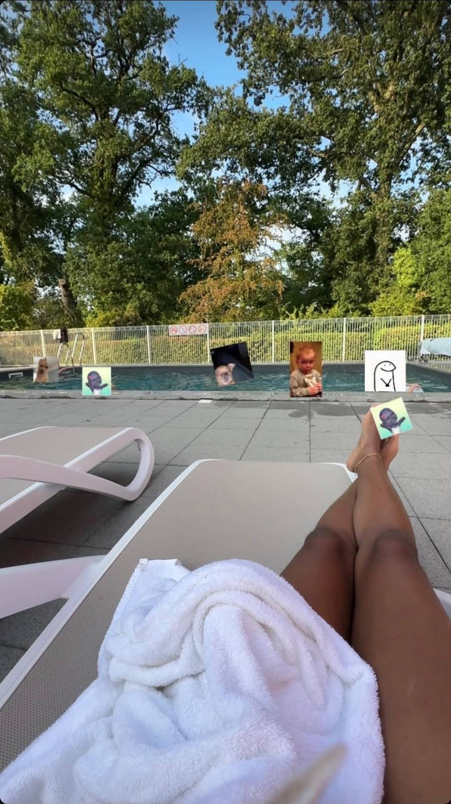
33 jours, plein de souvenirs, de découvertes et d'émotions ❤️
Après avoir quitté la Martinique, direction la France pour une seconde aventure d'un mois. Entre sorties, découvertes, activités, repas, moments en famille et petites galères, chaque journée avait son histoire.
Une arrivée plutôt fatigante : beaucoup d'attente pour arriver sur Nantes, mais malgré le KO, une piscine était là pour se détendre et se baigner.

Une soirée tranquille avec une bonne pizza suivie d'une balade au parc du Loiry.
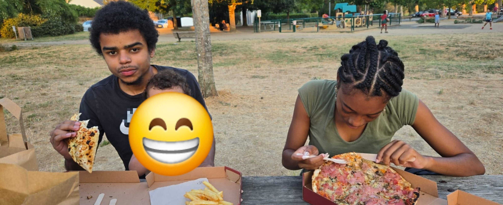
Une journée à Planète Sauvage à la découverte des animaux et de leurs différents environnements.
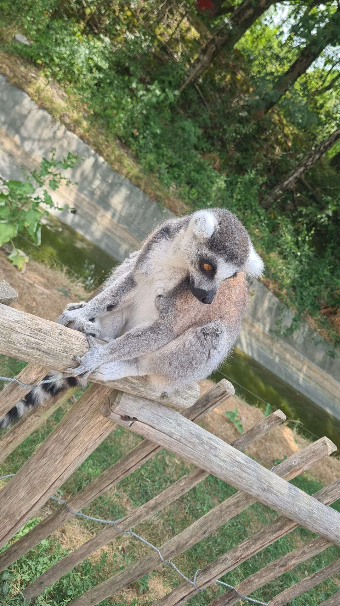
Une journée avec une séance de sport.
Une sortie cinéma suivie d'une balade à Montbert.
Après être parti sans prévenir, tu m'as revu avec ce bouquet en main.
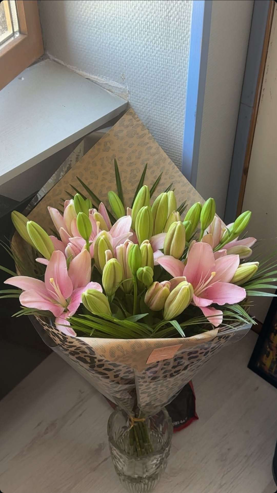
Une journée consacrée aux boutiques et au shopping avec ma copine.
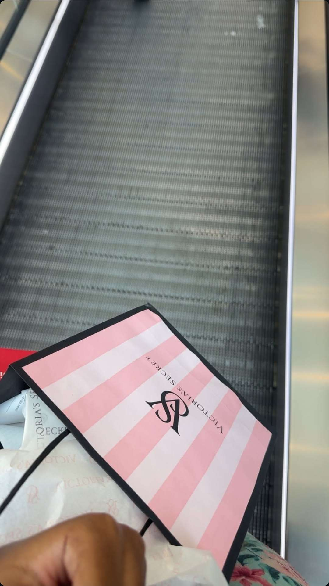
Découverte de la cascade d'Aigrefeuille et moment au milieu de la nature.
Une journée culturelle avec la découverte d'oeuvre dans le musée d'art, avec en illustration la plus belle d'entre elles ❤️
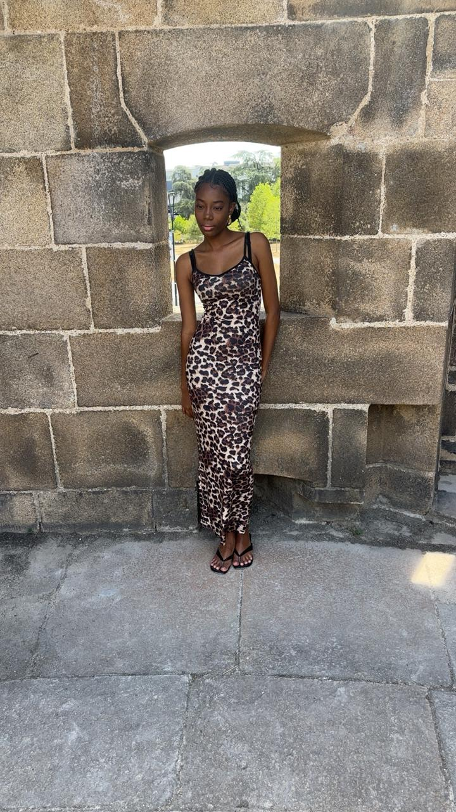
Une journée bien fournie en émotions : La piscine, la conduite, le nettoyage de la voiture ainsi que le repas qui j'espère ensemble ont pu aténuer certains évènements de cette journée.
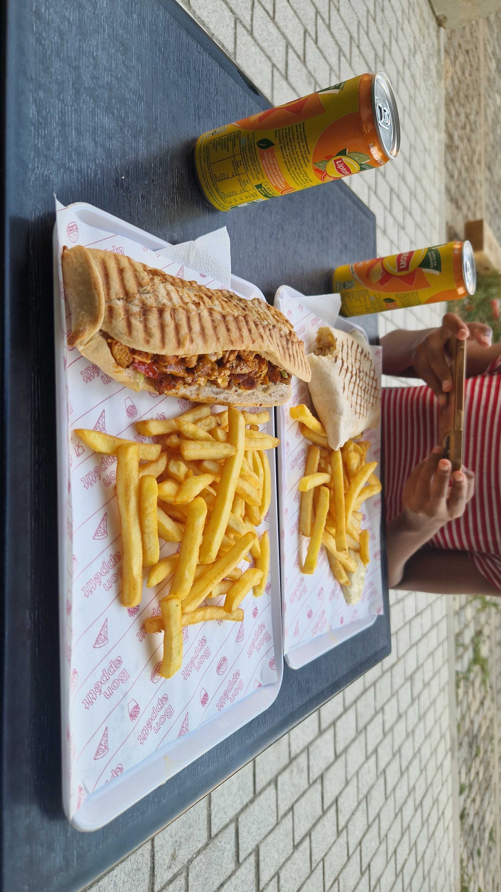
Un bon bokit avant de partir profiter d'une session à la patinoire dans un froid dans lequel tu n'as pas l'habitude.
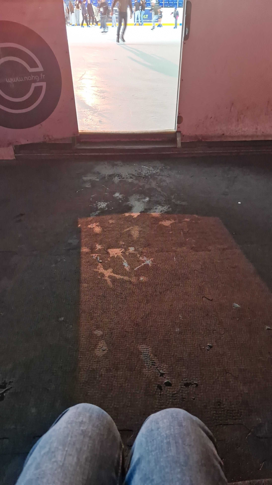
Une journée pleine en énergie avec au programme Prison Island, puis un repas chez Memphis entre cousins.
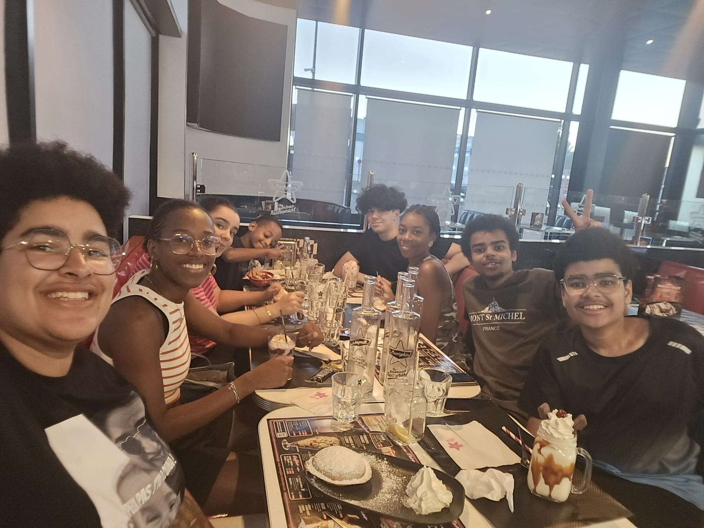
Passage au garage pour la voiture, puis direction le cinéma pour Spider-Man.
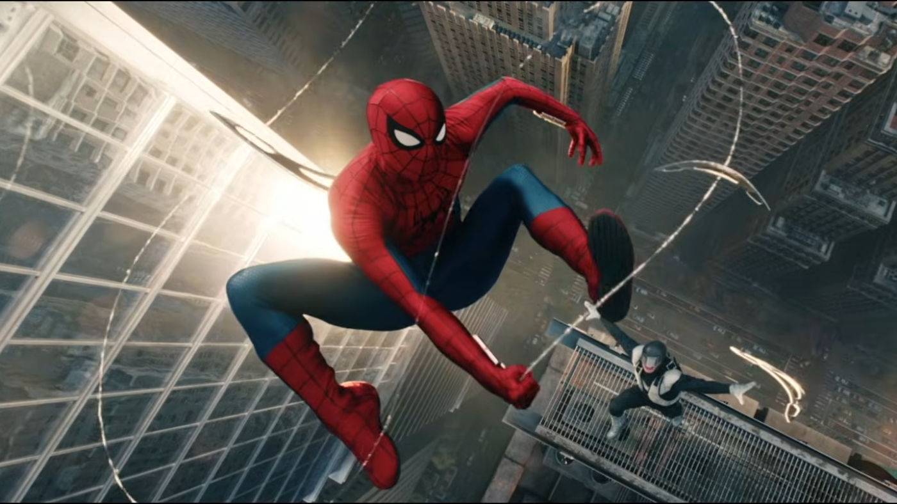
Création d'un pain au beurre et de pommes canelles grâce à ma tante.
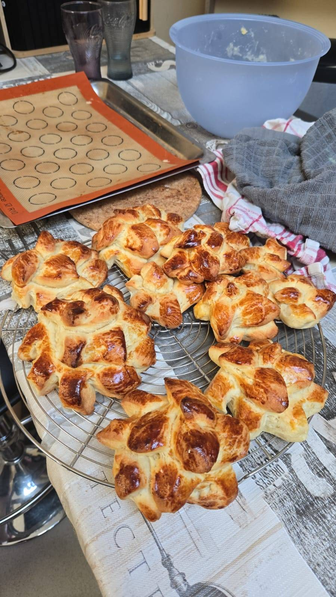
Restaurant le soir pour la journée internationale de la petite amie, puis la fin de la soirée en voiture.
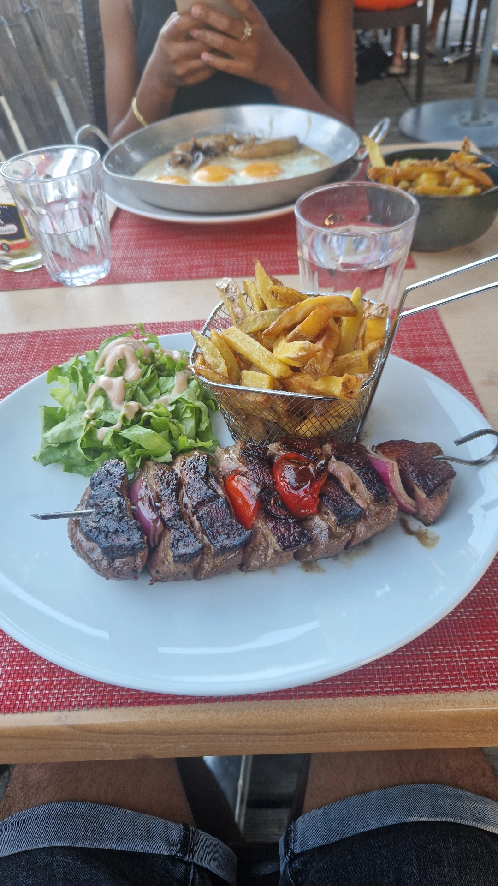
Une bonne crêperie suivie d'une séance de cinéma hihi.
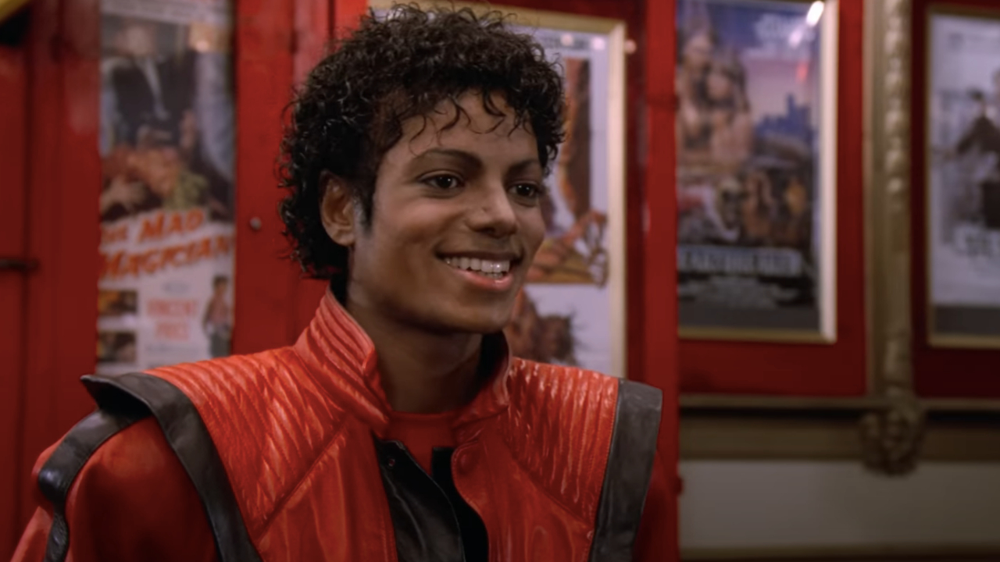
Une journée films avec notamment Mowgli.
Une journée documentaire avec La vie sur notre planète. tu étais trop contente qu'on regarde ensemble
Un après-midi mouvementé avec au programme du bowling et de l'arcade ensuite ().
Une soirée particulière avec une éclipse et l'observation des étoiles filantes. Malgré que tu n'ai pas eu l'occasion de les observer, j'ai fais des voeux à chaque fois que j'ai aperçu une étoile filante souhaitant un avenir heureux avec toi
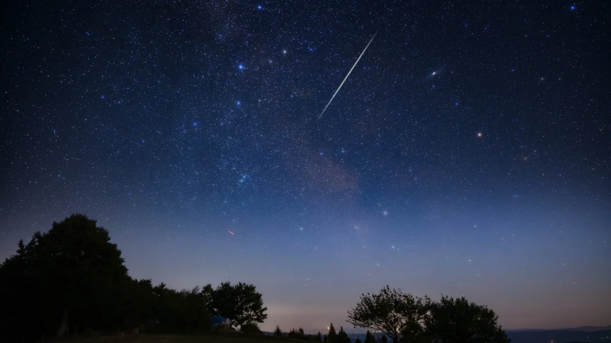
>À compléter avec son propre ressenti...
À compléter avec son propre ressenti...
À compléter avec son propre ressenti...
À compléter avec son propre ressenti...